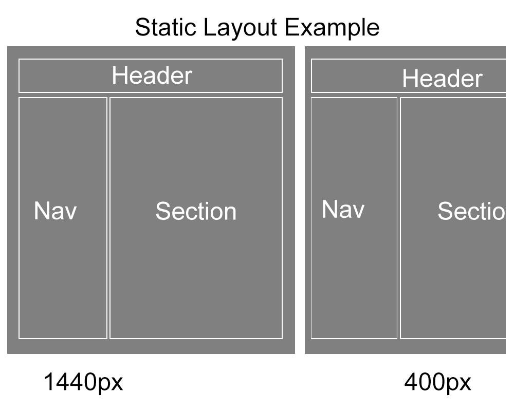
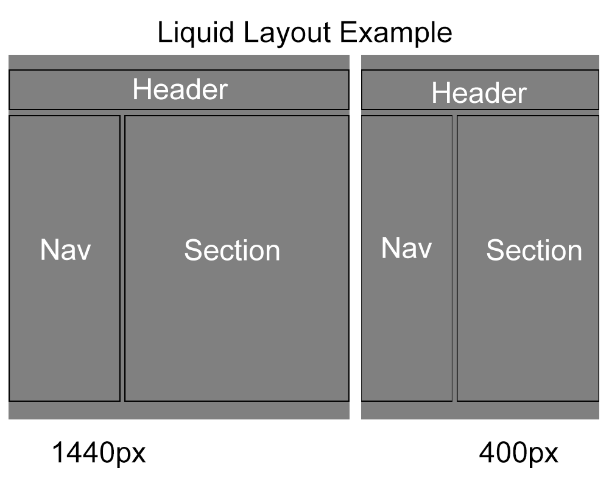
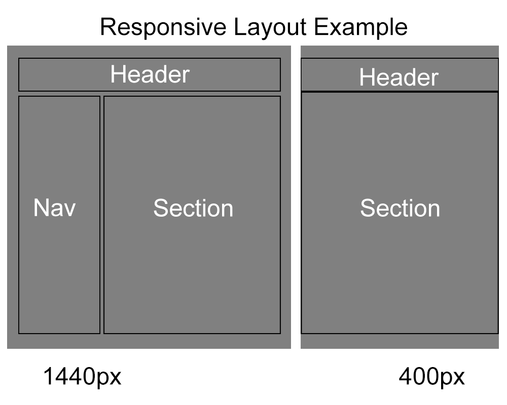
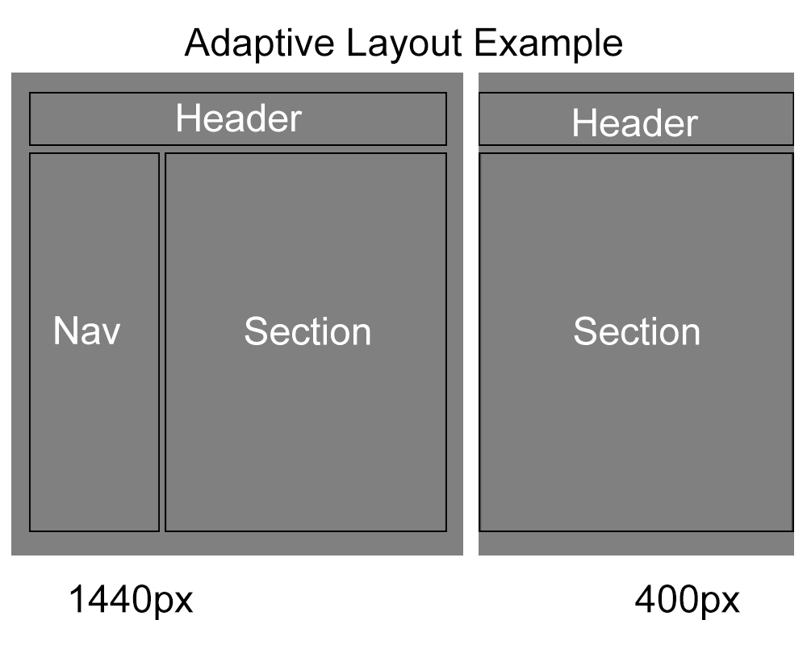

I dag findes der mange forskellige skærmstørrelser, og tanken om at have en hjemmeside der ikke er responsiv i dag er ikke venlig.
Designerne vil gerne have en hjemmeside som kan passe flere forskellige skærmstørrelser, uden at skulle skrive alt for meget kode ekstra.
Der er 4 overordnede tilgange:
Statisk
Denne Layout metoder er baseret på faste mål, f.eks. har den en bestem vidde og højde, og vil ikke ændre sig selvom skærmstørrelsen ændre sig.
Hvis skærmen er størrer end selve indholdet, vil hjemmesiden have luft i siderne, og hvis skærmen er mindre end hjemmesiden, vil den cutte noget af hjemmesiden af.
På moblie enheder, samt tablets, bliver man derfor nød til at zoome ind og ud, på disse hjemmesider.
Denne form for hjemmeside var meget normal i de første år af internettets historie.
Flydende
Ved brug af denne metode tilpasser elementerne sig til den givende bredde af hjemmesiden, bredden her er normalt angivet i procent.
En negagtiv ting ved brug af denne layour form er, at ting på hjemmesiden kan virke til, at de passer perfekt i en vidde, men kommer til, at se andreledes ud i en anden skærmstørrelse.
En tilknyting til dette er, at hvis indholdet bliver for stort, vil det komme til at gå ud over sin bredde, den har fået angivet.
Denne metode ligger meget vægt på funktionalitet og indhold, i forhold til grafisk design.
Adaptiv
Denne metoder ændre på de regler der er opsat i css'en når andre skærmbredder kommer i spil.
Det er blevet brugt på denne hjemmeside i form af;
@media screen and (max-width: 500px) {}
@media screen and (min-width: 500px) and (max-width: 1000px) {}
@media screen and (min-width: 1000px) {}
Dette er i dag den standard man normalt følger, og kræver at man kun ændre i ens css og ikke HTML filerne.
Denne metoder er den mindst vanskelige metode at bruge.
Responsive
Denne layout metode styres af @mediaqueries, et eksemple på dette er;
@media only screen and (max-width: 768px) {
Her for mobil størrelsen, eller skærme der er under 768px bred, skal alle kolonner fylder 100%
[class*="col-"] {
width: 100%;
}
}
Hvis man dog ikke rammer det breakpoint der bliver sat ind, vil der komme for lidt eller for meget plads.
Scale
En vigtig ting man skal huske når man vil lave en responsiv hjemmeside er at huske meta tagget;
meta name="viewport" content="width=device-width, initial-scale=1"
Dette meta tag fortæller nemlig om hjemmesiden skal scalere dit indhold eller ej. Hvis dette meta tag ikke ligger i din header vil mediaqueries normalt ikke virke.
Mobile first
Denne metode bruges til at style din hjemmeside, med fokus på hvordan hjemmesiden kommer til at se ud på en mobil enhed først.
Man starter ud med at designe mobil siden, fra tablet siden og til sidst hvordan den skal se ud på pc'en.
Denne metoder er den mest fortrukne i dag, hvor vi gik fra Desktop first, pc'en, til Mobil first.